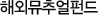

해외펀드

해외뮤추얼펀드는 해외의 자산 운용사가 설립한 회사형 투자신탁으로 투자신탁설명서(Prospectus)에 명시된 투자방침과 규정에 따라 신탁 자산이 운영되는 펀드를 말합니다. 해외뮤추얼펀드는 외국의 유명 펀드운용회사가 해외유가증권 등에 투자하는 뮤추얼펀드로서, 회사형 투자신탁이라는 측면에서 한국의 뮤추얼펀드와 유사하지만 언제라도 환매가 가능한 개방형이라는 점과, 투자지역별, 투자대상별 및 투자목적별로 다양한 상품이 있다는 점 등에서 국내의 뮤추얼펀드와 구별이 된다.
또한 대부분의 해외뮤추얼펀드는 하나의 모(母)펀드아래 여러 개의 자(子)펀드를 가지는 엄브렐러형 구조를 하고 있는데, 보통 이들 자펀드간에 자유로운 전환을 허용함으로써 투자자의 적극적인 수익률 관리가 가능하고 투자의 융통성을 크다는 장점이 있다.
-
투자목적에 따른 분류
성장형(Growth Fund) / 소득형(Income Fund) / 균형형(자산배분형, Balanced Fund)
-
투자대상지역에 따른 분류
전세계투자펀드(Global Fund) / 지역펀드 / 국가펀드 / 이머징마켓펀드
-
자산구성에 따른 분류
주식형(Equity Fund) / 채권형(Bond Fund, Fixed Income Fund) / 합성형(Hybrid Fund) / 현금형펀드
-
기타
인덱스펀드 / 섹터펀드 / 라이프스타일펀드 / 엄브렐러펀드 / 헷지펀드
해외 뮤추얼 펀드는 국제투자신탁의 일종으로 어느 국가, 어느 지역이든 투자할 수 있습니다.
각각의 국가는 개별적인 경기 사이클을 가지고 있기 때문에 이들 경기 순환의 시차를 이용한다면 언제나 활황장세에 있는 국가의 증시에 투자할 수 있습니다.
- 투자자산을 세계 여러 나라에 분산 투자하여 투자에 따르는 위험을 분산 시킬 수 있습니다.
- 예를 들어 1억원을 뮤추얼 펀드에 투자한다고 가정합니다. 투자금 1억원 전액을 국내 뮤추얼 펀드에만 투자한 경우와 5천만원은 국내에, 나머지 5천만원을 미국 뮤추얼 펀드에 분산투자하였을 경우를 비교해 봅시다. 투자 후 국내 경제 불안으로 국내증시가 15% 하락한 반면 미국은 경기 호조로 10%상승하였다고 가정합니다. 해외뮤추얼 펀드 로 분산 투자시 아래와 같이 투자에 따르는 위험을 분산시킬 수 있습니다. 각 나라의 경기 싸이클은 언제나 동일하게 움직이지 않기 때문입니다.
- 투자자산의 일부를 달러, 엔, 유로등 외화자산으로 보유하여 외환시장의 급격한 변동으로부터 투자자산을 보호할 수 있습니다.
- 세계 최고의 공신력과 우수한 운용실적을 가진 자산운용사의 유명 펀드매니저가 운용하는 펀드에 투자할 수 가 있습니다.
- 여러 펀드로의 전환이 자유로와 투자자산을 유동적으로 운용할 수 있으며, 환매수수료가 없는 개방형이기 때문에 언제든지 환매가 가능합니다.
- 세계 최우량의 회사들 GM, 포드, 모토롤라, 노키아, 마이크로소프트, 인텔, HSBC은행, 소니, IBM, 보다폰 등에 간접 투자할 수 있습니다.
- 해외 뮤추얼 펀드도 국내 뮤추얼 펀드와 같은 실적배당형 상품이기 때문에 해외증시 변동의 위험이 있습니다.
- 해외 뮤추얼 펀드는 외화(달러, 엔, 유로)로 결제되기 때문에 환율 변동에 따른 위험이 있습니다.
- 해외 뮤추얼 펀드는 고객의 매수의뢰 후 2영업일이 지나 체결되고 환매시 환매대금은 환매일로부터 5영업일 이상이 소요됩니다.